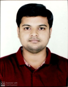

kartik@aries.res.in | +91 8485802998
Wardha, Maharashtra, India, 442001
Aryabhatta Research Institute of Observational Sciences, Nainital (2025–Present)
Integrated M.Tech PhD (Astronomical Instrumentation), CGPA: 8.78
Rashtrasant Tukadoji Maharaj Nagpur University, Nagpur (2020–2022)
M.Sc Physics (Nanotechnology), CGPA: 8.76, Score: 83.22%
Bajaj College of Science, Wardha (2017–2020)
B.Sc Physics, Chemistry, Mathematics, CGPA: 8.54, Score: 81.15%
HSC (2017 - 82.3%) | SSC (2015 - 91%)
Graduate Aptitude Test in Engineering (GATE) in Physics (PH), February 2022
M.Tech Thesis Project – ARIES and Calcutta University (Jan 2025 – Jul 2025)
The TA-MOONS (TIFR-ARIES Multi-Object Optical to Near Infrared Spectrograph) instrument is a medium-resolution spectrograph undergoing development for the 3.6-meter DOT in Nainital.
Kodaikanal Solar Observatory, Indian Institute of Astrophysics (Feb 2023 – May 2023)
Developed a novel approach for detecting Coronal Bright Points (CBPs) using Python and IDL.
Society for Academic Research STEM / University of Manchester (Jun 2021 – Aug 2021)
Research project on habitability of exoplanets, temperature distribution and tidal effects using climate models.
Indian Institute of Astrophysics (May 2019 – Jul 2019)
Study on exoplanet detection methods including Doppler spectroscopy, astrometry, transit photometry, microlensing and direct imaging.
M.Sc Thesis Project, RTMNU (Jan 2022 – May 2022)
Synthesized and characterized Aluminum oxide nanoparticles using green synthesis methods.
Programming: C, C++, Python, LaTeX, IDL, Matlab, LabVIEW
Extracurricular: Classical Vocal (Visharad Pratham), Classical Tabla (Madhama Pratham), Astrophotography
Languages: English, Hindi, Marathi